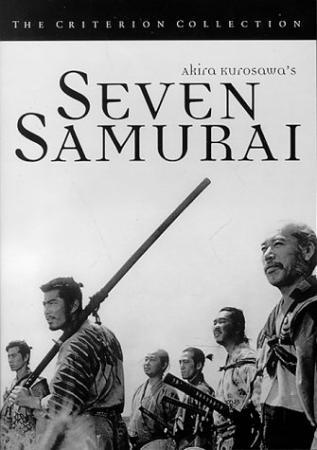
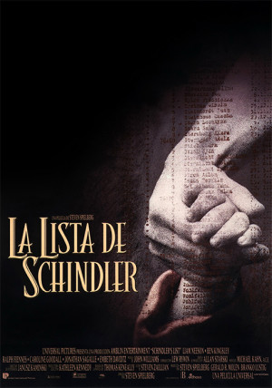
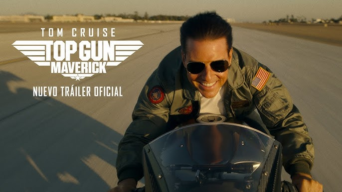
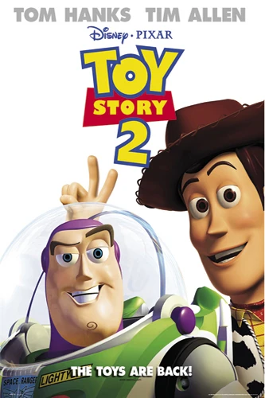

A continuacion
Si las peliculas anteriores no fueron de tu agrado, te vamos a recomendar algun otra pelicula, podras ver algunas de las mejores peliculas a continuacion
Seven Samurai (1954)
Una de las obras más influyentes de la cinematografía nipona en la que los habitantes de una aldea contratan a siete guerreros para que los defiendan de 40 bandidos.
 ver mas---------------------------------------------------------------------- ----------------------------------------------------------------------
Parasite (2019)
Tanto Gi Taek como su familia están sin trabajo. Cuando su hijo mayor, Gi Woo, empieza a impartir clases particulares en la adinerada casa de los Park, las dos familias, que tienen mucho en común pese a pertenecer a dos mundos totalmente distintos, entablan una relación de resultados imprevisibles.
 ver mas
ver mas
---------------------------------------------------------------------- ----------------------------------------------------------------------
Schindler's List (1993)
Oskar Schindler es un presuntuoso y ambicioso empresario alemán que aprovecha sus buenas relaciones con los gerifaltes nazis para hacerse rico vendiendo material al ejército durante la Segunda Guerra Mundial. Pero cuando Schindler toma conciencia de lo que está sucediendo con los judíos, cambia de actitud y hace todo lo posible por salvar el mayor número de vidas posible.Rodada casi por completo en Polonia y en un atrevido blanco y negro, ''La lista de Schindler'' es la obra más intensa y personal de Steven Spielberg. Basada en hechos reales, obtuvo siete premios Óscar, incluyendo mejor película, guion adaptado, director, fotografía y dirección artística. El triángulo protagonista, formado por Liam Neeson, Ben Kingsley y Ralph Fiennes, interpreta de manera soberbia a sus personajes. Este último, que dio vida al oficial nazi Amon Goeth, engordó 13 kilos a base de cerveza Guiness para resultar más repulsivo.Una curiosidad: en los años 80, Martin Scorsese desechó la oportunidad de llevar esta historia al cine porque sostenía que nunca llegaría a hacer un trabajo tan bueno como el que podría hacer un director judío.
 ver mas---------------------------------------------------------------------- ----------------------------------------------------------------------
Top Gun: Maverick
Maverick, quien lleva 30 años de servicio, es ahora instructor de pilotos militares. Una última misión, un sacrificio final, obliga a este maestro de los cielos a enfrentar las heridas abiertas del pasado y sus temores más profundos.
 ver mas---------------------------------------------------------------------- ----------------------------------------------------------------------
Toy Story 2
Cuando Andy se va de campamento dejando solos a los juguetes, Al McWhiggin, un compulsivo coleccionista de juguetes valiosos, secuestra a Woody. Buzz Lightyear y los demás juguetes tendrán que actuar con rapidez si quieren rescatarlo. Durante la operación de rescate no sólo tendrán que afrontar múltiples peligros, sino que también vivirán divertidas situaciones.
 ver mas